3.1 アニメーションベント
3ds Maxでは、「アニメーション」のデータを出力する際に、「アニメーションイベント」というものを設定できます。
では、「アニメーションイベント」とはどういうものでしょうか？
例えば、「プレイヤーの攻撃アニメーション」は以下のようなものです。
しかし、この「攻撃アニメーション」の全てで攻撃判定をしたいわけではありませんよね？
下記のような、「剣を振り回している間」だけ攻撃判定を取りたいわけです。
そのような時に使用するのが、「アニメーションイベント」という訳です。
「アニメーションイベント」を使用すれば、「アニメーションの再生中に任意のタイミングで、何らかの処理を実行する」ことができます。
これを使用すれば、さきほどの「剣を振り回す間だけ、攻撃判定をする」ということが可能なような気がしませんか？
3.2 通常攻撃のアニメーションキーの設定
ではまず、3ds Maxで「アニメーションイベント」の「任意のタイミング(アニメーションキー)」を設定しましょう。
では、3ds Maxを開いて、Assets/modelData/humanのhuman_attack.fbxを読み込んでください。

そうすると、このようなアニメーション付きのモデルが読み込まれたかと思います。
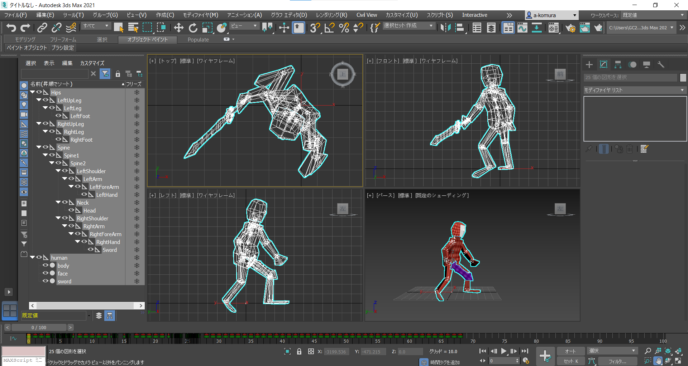
3ds Max下部の「アニメーションを再生」というところを選択すると、「攻撃アニメ―ション」が再生されると思います。
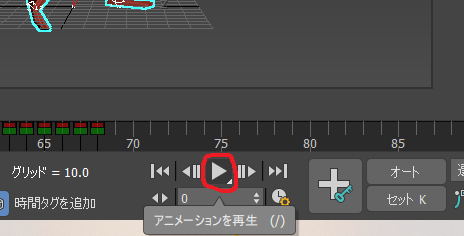
それでは、この「攻撃アニメーション」の、「剣の振り始め」と「剣の振り終わり」に「アニメーションキー」を設定していきましょう。
まず、「ルートボーン」である、「Hips」を選択してください。
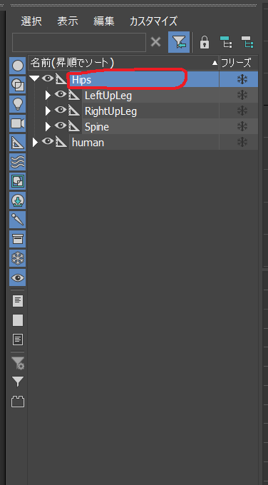
次に、3ds Max上部の「グラフエディタ」の「トラックビュー ドープシート」を選択してください。
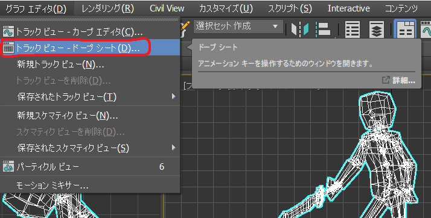
そうすると、このようなウィンドウが表示されると思います。
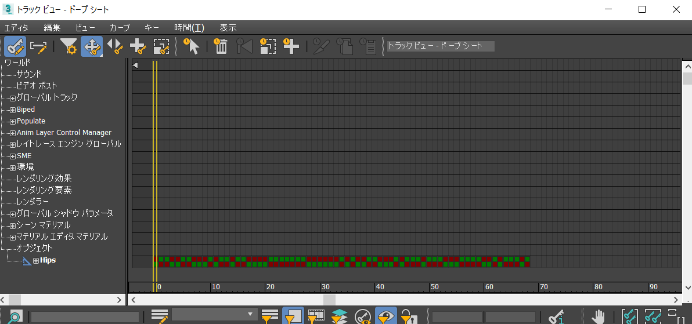
次に、このウィンドウ上の「Hips」を選択して、「編集」→「ノート トラック」→「追加」を選択してください。
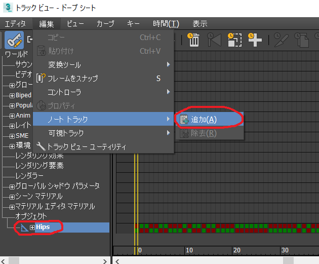
そして、「Hips」の左にある「+」をクリックすると、このように「ノート」という項目が追加されていると思います。
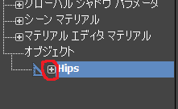
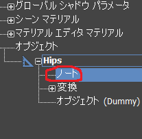
次に、「キー」→「キーを追加/除去ツール」を選択してください。これで「キー」を設定できるようになりました。
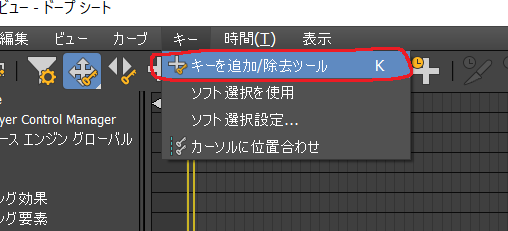
では、実際に「キー」を設定していきましょう。
まず、追加された「ノート」を選択して、「ノート」項目の「19フレーム」付近をクリックしてください。
そうすると、このように「キー」が追加されます。
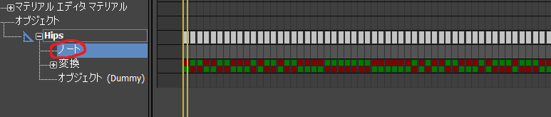
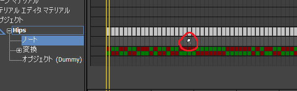
この追加した「キー」を右クリックすることで、「キーを編集」することができます。右クリックしてみてください。
すると、次のようなウィンドウが表示されます。
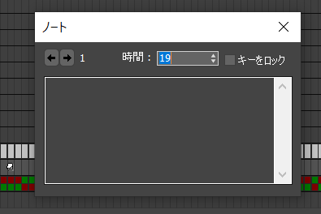
では、「キー」をこのように編集してみてください。
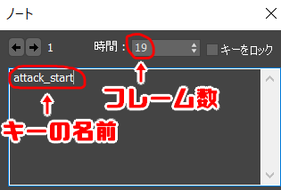
すると、このように「キーの名前」が表示されます。
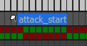
次に、「剣の振り終わり」の「アニメーションキー」を設定していきましょう。
先ほどと同じように、「ノート」の項目をクリックして「キー」を追加してください。
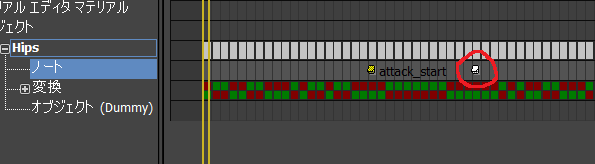
次に、この追加した「キー」を右クリックして、キーをこのように編集してください。
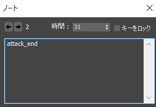
このようなキーが追加されたでしょうか？
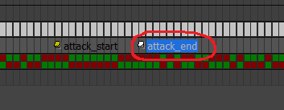
では、この「アニメーションキー」のデータを出力していきます。
「トラックビュー ドープシート」を閉じて、「ユーティリティ」から「tkExporter」を起動してください。
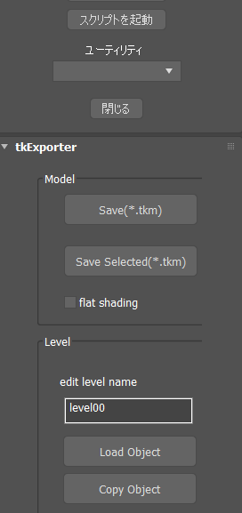
次に、「tkExporter」の「Animation」項目の「start frame」と「end frame」を下記のように設定してください。
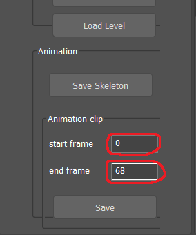
最後に、「Save」から、Assets/animData/humanのattack.tkaを選択して保存してください。
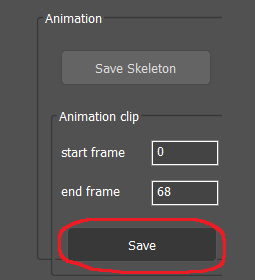
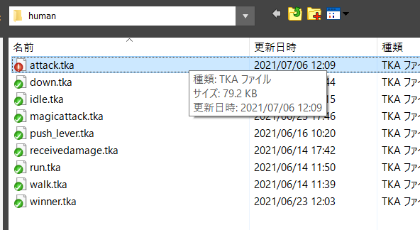
これで、3ds Max側の操作は終了です。
3.3 アニメーションイベントを使用した通常攻撃
では、設定した「アニメーションキー」を使用して、通常攻撃の当たり判定を実装していきましょう。
それでは、Game.slnからいつも通りVisual Studioを立ち上げてください
そして、Player.hに「アニメーションイベント」で使用するための関数を宣言 してください。150行目程度です。
Player.h